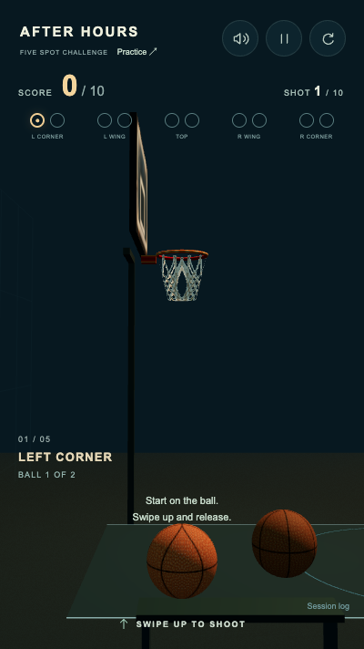
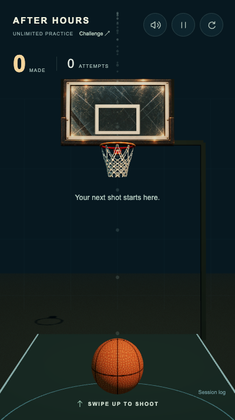

AFTER HOURS · FIVE-SPOT CALIBRATION
More meaningful swipe variation.
The same physical hoop.
Default candidate: softBand .08 / softDepth .075. Neutral
remains .30, the rim stays .232 m, and
horizontal aim, spin, physics and scoring remain unchanged.
Human A — original ·
Human B — moderate ·
Full report and two-round instructions
· Measured summary ·
Changed files
These rates are sensitivity measurements, not human make rates.
The grid equally weights explicit gestures, including many samples near
the horizontal dead zone. Both configurations still make 405/405 shots
in the defined core subset. Human A/B acceptance remains pending.
Paired before / after, five angles
195 shots per position. Main grid: upward .18–.42, horizontal −.18–.18 at
the listed fixed sample points. “Swish” means a make with no physical rim
or board contact before confirmation.
| Spot |
Original make |
Moderate make |
Original swish |
Moderate swish |
Explore the actual Rapier outcomes
SwishRim makeBoard makeRim missBoard miss
Original
Each square is one real physical shot. Hover or tap for its target
offsets and outcome.
Horizontal axis: swipe-right displacement / screen width. Vertical axis:
swipe-up distance / screen height. White outline marks the centred .30 / 0
cell. The additional short/long/lateral edge probes are exported
separately from these rates.
Independent rim experiment
| Mapping / radius |
Makes /975 |
Swish |
Rim make |
Board make |
Rim miss |
Board miss |
Gesture tuning: 614 → 498 makes. Shrinking only the rim: 614 → 611. A
smaller rim with moderate mapping gives 502, because some real rebounds
change into makes. The evidence supports keeping .232 m. Optional smaller
geometry was tested consistently across visual torus dimensions, net
attachment, physical segments and scoring clearance; it is not enabled in
the game.
Identical native-touch inputs, actual game sound
The demonstration deliberately includes weak/strong edge swipes. Both
recordings use the same partial guidance and include all five positions,
results and a real retry. Native compositor frames retain original
timestamps and actual master audio; no scores, transforms or clocks are
injected. The small sample is not an estimate of human success.
Guidance change

Challenge idle · no ideal shot revealed
Challenge aim · 12 faint early-flight dots

Practice · full assistance retained
Your two rounds
Use the development server. Warm up briefly in Practice, then open A and
shoot ten natural gestures. At results export Session log → Copy session
JSON before changing links. Repeat with B on the same phone; save both
exports. Compare miss clarity, control and desire to retry as well as
score. Ignore the shared personal best. If repeating, alternate the order.
Production ignores the A override.
Full browser checks ·
Real physics and unit checks ·
Preserved physics / camera / spin / art / audio / net